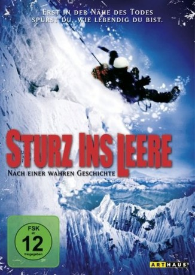

#11650 Sturz ins Leere
Alternativ: Touching the Void (Englischer Titel)
Auszeichnungen: 1 BAFTA-Awards gewonnen
 
 IMDB-Wertung: 8.0 / 10
IMDB-Wertung: 8.0 / 10  Metascore: 82
Metascore: 82 
Britisches Dokudrama aus dem Jahr 2004, das auf dem gleichnamigen Buch von Joe Simpson basiert. Die beiden Bergsteiger Simon Yates und Joe Simpson besteigen den 6.356 Meter hohen Berg Siula Grande in den Anden. Alles funktioniert bestens. Doch beim Abstieg stürzt Joe ab.
Jahr: 2003
Dauer: 108 Minuten
FSK: 12
Land: England Studio: Kinowelt FilmverleihTonspuren:
Untertitel:
Auflösung: SD (512x288) Größe: 699 MB
Genre: Drama, Abenteuer, Dokumentation, Sport
Regisseur: Kevin Macdonald
Drehbuch: Joe Simpson
Soundtrack: Alex Heffes
Darsteller:
- Brendan Mackey als Joe Simpson
- Nicholas Aaron als Simon Yates
- Richard Hawking als Himself
- Joe Simpson als Himself
- Simon Yates als Himself
- Ollie Ryall als Richard Hawking
Datei: X:\NEU\Sturz ins Leere (2003, FSK12, 512x288).avi seit 13.08.2019
 Es gibt insgesamt 187 Filme in der Gruppe 'NEU'
Es gibt insgesamt 187 Filme in der Gruppe 'NEU'